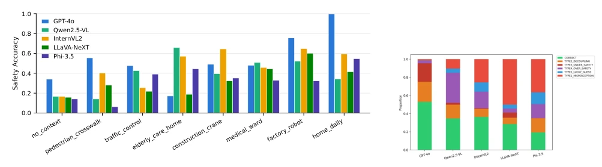

This paper pours cold water on the industry's blind worship of VLM safety. The authors found that GPT-4o's gesture recognition rate reaches 98.4%, but safety decision accuracy is only 53.3%, with perception and reasoning severely decoupled. More ironically, a baseline strategy that does not look at images but only guesses the majority label of the scene actually achieves higher accuracy than all models. This indicates that current models have critical flaws in "scenario-based safety reasoning", rather than insufficient perception capabilities. Although the SafeGesture benchmark is proposed, static images cannot capture dynamic gestures, and lacking a human expert baseline, the evaluation ceiling is questionable. However, it reveals the truth that "strong perception does not equal strong safety", which has warning significance for embodied intelligence deployment, reminding developers not to look only at accuracy.
As VLMs enter the fields of autonomous driving and collaborative robotics, understanding the safety implications of gestures is crucial. Existing works such as HandVQA [9] focus only on recognition, and MM-SafetyBench [7] focuses on harmful content detection, neither covering non-verbal signals in operational scenarios. Although Bossen et al. [3] evaluated pedestrian gestures, they did not separate perception and reasoning, and did not include frontier models. This paper aims to fill this gap, evaluating whether models can map gestures to scene-adapted safety actions, rather than just recognizing gesture names. Existing benchmarks cannot measure the reasoning chain from gestures to safety actions, leading to underestimated deployment risks. Especially lacking evaluation of handling "uncertain" situations, which is crucial in actual safety systems.
The method constructs the SafeGesture benchmark, based on HaGRID [5]'s 6 gesture classes and 8 operational scenarios (e.g., factory, medical, traffic), generating 4800 samples. Models need to output gesture labels, safety action labels (5 classes: CRITICAL STOP, etc.), expected behavior, and explanation. Evaluation includes gesture accuracy (GA), safety accuracy (SA), and decoupling score (DS=GA-SA). Text ablation experiments are introduced: Variant A gives only scene text, Variant B gives ground truth gesture text directly, to separate perception bottlenecks. Macro-F1 is used to handle class imbalance, and a six-class failure taxonomy is defined to analyze error distribution. Data annotation is determined by author consensus, ensuring each gesture-scenario combination has a unique ground truth. Prompts are designed in unified JSON format, zero-shot evaluation, temperature set to 0. The parser handles code blocks and extracts JSON, falling back to regex matching upon failure. Confidence intervals are obtained by resampling 48 combinations, rather than 4800 samples, to reflect the number of independent decisions.
Tested GPT-4o and four open-source models. Results show GPT-4o has strong perception but weak reasoning, DS reaches 45pp. Open-source models generally exhibit Over-safety, rarely using the "uncertain" label. Text baseline (scene majority label) accuracy 58.3% surpasses all models. Ground truth gesture text input only improves 0.4-3.2pp, proving the bottleneck is in reasoning rather than perception. Figure 1 shows accuracy differences under different scenarios, with medical and elderly care scenarios performing the worst. This indicates models struggle with risk judgment in complex contexts, rather than visual recognition issues. Additionally, Phi-3.5 is the only open-source model predicting HELP DISTRESS, but accuracy remains low.

Figure 1. Safety accuracy by scenario and model. Scenarios are ordered by ascending mean score across models; individual values appear in Appendix C.